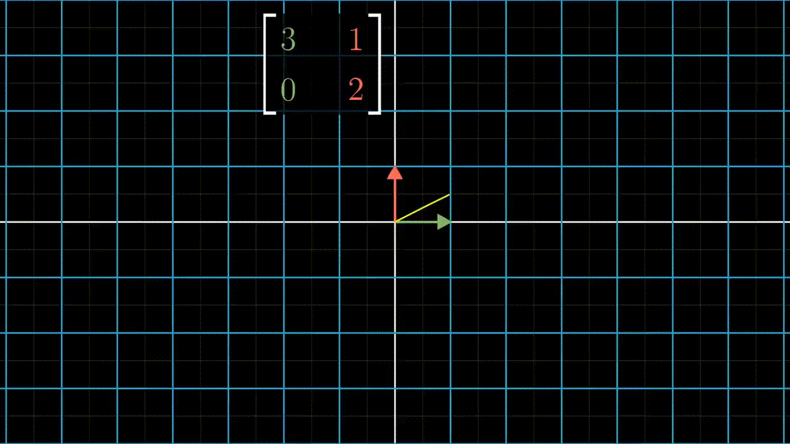

Collections
01
Module
Course guide
1 curated item
02
Module
Core linear algebra
11 curated items
NotebookScalars, Vectors, Matrices And TensorsNotebookThe Trace OperatorNotebookThe DeterminantNotebookMultiplying Matrices And VectorsNotebookIdentity And Inverse MatricesNotebookLinear Dependence And Span
Supporting material in Core linear algebra5 items
03
Module
Advanced methods
8 curated items
Section notes
This course is focused on the question: How do we do matrix computations with acceptable speed and accurancy?
The course is taught in python with jupyter notebooks, using libraries like Scikit-learn and Numpy as well as Numba ( a library that compiles Python to C for faster performance) and PyTorch ( an alternative to Numpy for the GPU)
Table of Contents
1. Why are we here?
We start with a high level overview of some foundational concepts in numerical linear algebra. Matrix and tensor products Matrix Decompositions Accuracy Memory Use Speed Parallelization & vectorization
NotebookWeek 1 Introduction To MatricesNotebookWeek 2 Singular Value DecompositionNotebookWeek 3 Topic Modeling With NMF And SVDNotebookWeek 4 Background Removal With Robust PCANotebookWeek 5 Compressed Sensing CT Scans Robust RegressionNotebookWeek 6 Health Outcomes With Linear Regression
Supporting material in Advanced methods2 items
04
Module
GIFs
1 result figure
